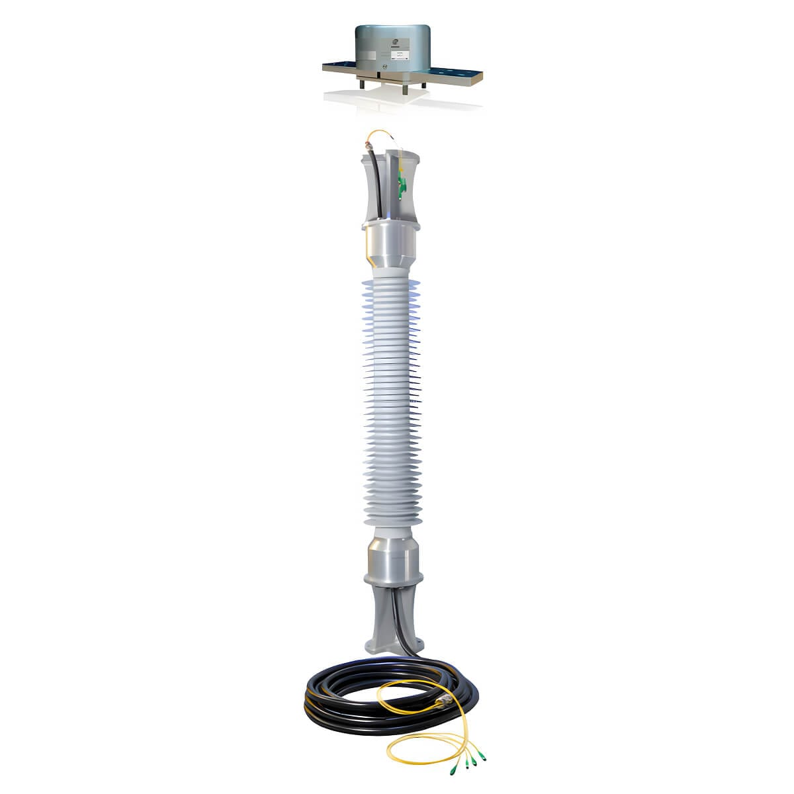

-
Optical Voltage And Current Transformer
2026-09-20
Traditional voltage and current transformer imply electromagnetic induction principle to stepdown the high voltage or current to lower secondary four measurement and protection. Optical Current Transformers (OCTs) and Optical Voltage Transformers (OVTs) are an alternative to the conventional transformers because they use light instead of magnetic fields to measure current, which means they're completely immune to electromagnetic interference and don't risk the saturation issues that conventional iron cores face. This technology also eliminates the danger of high-voltage exposure in the secondary circuit during a fault.
They both imply the electro–optic effect witch is a change in the optical properties of a material in response to an electric field that varies slowly compared with the frequency of light.
• An Optical Current Transformers (OCTs) is a sensor that uses the Faraday effect in an optical medium to measure current by detecting the rotation of polarized light.
• An Optical Voltage Transformers (OVTs) measures high voltage by applying the Pockels or Kerr effect in a crystal, where the electric field changes the properties of the light passing through it.
-
Instrument Transformers
In power systems, currents and voltages are extremely high. Therefore, direct measurement with... -
Circuit Breacker in Power System
Circuit breaker in power system are quite similar to that in our houses circuit box , but... -
Power Factor Correction
While reading this amazing book Fundamentals of Electric Circuits by Alexander and... -
Synchronous Generator Reactance
When calculating the short circuit current for a synchronous generator, we use sub-transient...